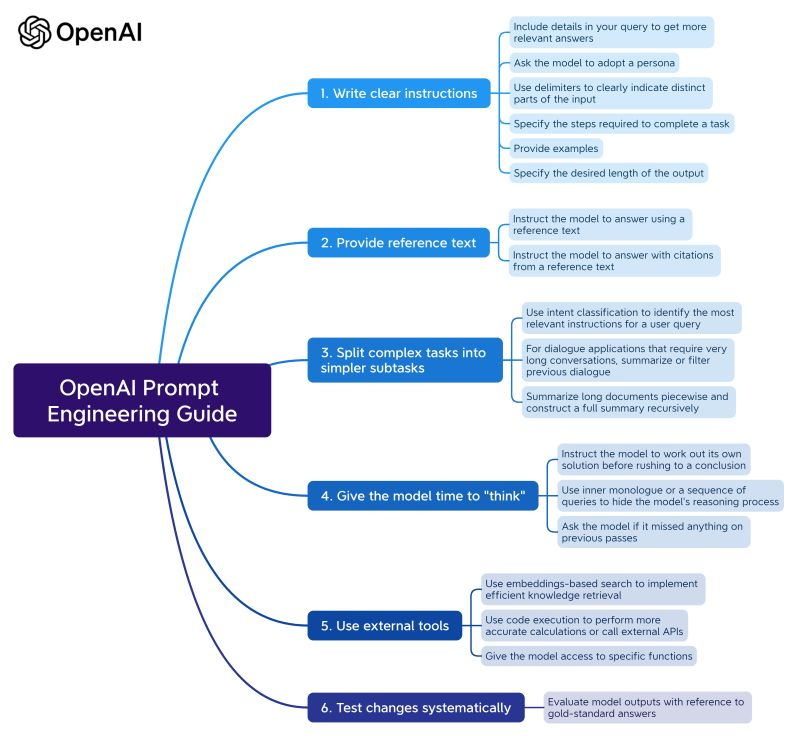

Guide OpenAI : 5 Stratégies pour des Prompts Efficaces
OpenAI vient de publier son guide complet sur l'écriture de prompts, révélant 5 stratégies essentielles pour obtenir des résultats puissants avec vos prompts. Découvrez comment maximiser l'efficacité de vos interactions avec ChatGPT.
1. Rédigez des instructions claires
- Précisez le Contexte et l'Objectif : Fournissez un cadre clair pour votre demande.
- Donnez des Informations contextuelles : Orientez les réponses de ChatGPT en fonction de vos besoins spécifiques.
- Définissez le Ton et le Style de Réponse : Indiquez si vous souhaitez une réponse formelle, informelle, technique, etc.
- Utilisez des Instructions Spécifiques pour le Persona : Guidez ChatGPT pour adopter un certain persona, comme un expert dans un domaine spécifique.
2. Fournir un texte de référence
- Utilisez des Références Externes : Demandez à ChatGPT d'intégrer des informations provenant de sources externes pour enrichir ses réponses.
- Précisez Comment Utiliser la Référence : Indiquez si vous souhaitez un résumé, une analyse ou une réponse basée sur les informations d'un texte.
3. Diviser les tâches complexes
- Utilisez une Approche Étape par Étape : Pour les tâches complexes, demandez une décomposition en étapes séquentielles.
- Gestion des Limites de Texte : Soyez conscient de la limite de texte et ajustez vos demandes en conséquence.
4. Laissez à ChatGPT le temps de réfléchir
- Posez des Questions Ouvertes : Encouragez l'exploration de différentes perspectives ou solutions alternatives.
- Utilisez des Prompts de Réflexion : Demandez à ChatGPT de revoir ou résumer ses pensées pour garantir la cohérence.
5. Tester systématiquement les changements
- Comparez les Réponses : Évaluez les réponses par rapport à des références pour vérifier leur exactitude.
- Ajustez et Améliorez : Utilisez les retours d'expérience pour affiner vos prompts et obtenir de meilleurs résultats.
Conclusion
Ces stratégies d'OpenAI offrent un cadre solide pour améliorer vos interactions avec ChatGPT. En appliquant ces principes, vous pourrez obtenir des réponses plus précises, plus pertinentes et mieux adaptées à vos besoins spécifiques.
Raccourcis Clavier
- Alt + ← Article précédent
- Alt + → Article suivant
- Alt + ↑ Haut de page
- Alt + Home Retour au blog